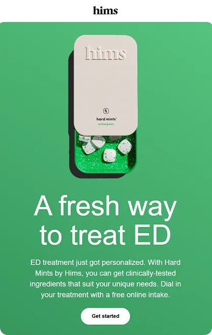
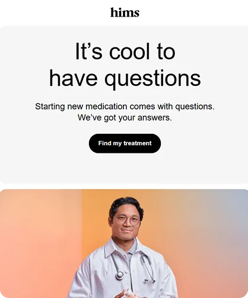
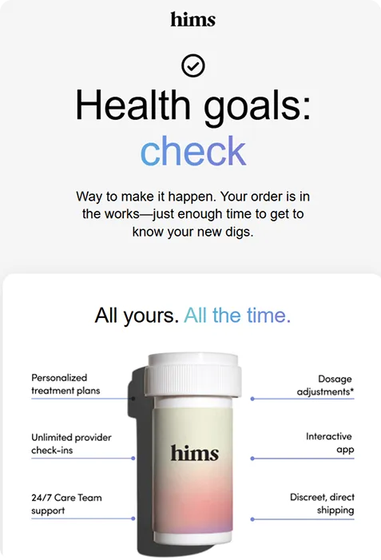

Designing great emails is not just about pretty layouts. It is about accessibility, trust, and code that works everywhere.
In this episode, Matt Helbig chats with Julia Papanek, lead email developer and designer at Hims & Hers, about how she hand-codes every campaign to look flawless in any inbox. From live text and hover effects to dark mode tricks and modular templates in Figma, Julia explains how to build emails that do not just sell but serve.
Whether you are a designer, developer, or lifecycle marketer, you will find practical takeaways to make your emails faster, cleaner, and more human.
🎥 Watch the episode or read the transcript below to learn how accessibility and good UX can elevate even the most transactional emails.
Matt Helbig: What's up, email geeks? Welcome back to another episode of Feedback Friday. We are back with an amazing episode featuring Julia from Hims & Hers. What's up, Julia? How are you?
Julia Papanek: I'm good. How are you?
Matt Helbig: Good! So you are the lead email developer and designer at Hims & Hers. Could you talk a little bit about what your day-to-day looks like?
Julia Papanek: Yeah. So I've been with Hims & Hers for over three years at this point. I handle all aspects of email development and design at the company. Every email you see these days is designed or coded by me, with a little help from one of our junior designers who’s currently being trained.
Matt Helbig: So what is Hims & Hers, for people who might not know?
Julia Papanek: Hims & Hers is a telemedicine company. We have prescription products and also over-the-counter products, and everything is handled 100% online.
Matt Helbig: Nice. Yes, I feel like you're definitely growing. We've been following your emails. We did a previous Feedback Friday with you before, but it's fun to come back and see what you’ve been up to.
Julia Papanek: Yeah, you did a Feedback Friday with my predecessor about three years ago, so this feels like a nice evolution.
Matt Helbig: Let’s talk about this first one. This email has been extremely popular over the last couple of weeks, garnering a significant number of views and collections on the site. What do you think makes this one really good? What kind of stands out to you?
 (
(Julia Papanek: The really beautiful imagery is a standout feature, and the short, center-aligned copy is always effective for a more promotional email. The goal for this one is to promote Hair Rx to prospective customers, so there’s a big, bold, eye-catching headline, followed by brief copy, and then beautiful lifestyle imagery. Below that, a secondary module highlights our products while showcasing some of our key value propositions, including 24/7 support and trusted ingredients.
Matt Helbig: Yeah, I really like this one. Looking back up, you have a kind of upside-down pyramid that draws your eye toward the “Get Started” CTA, which is a pretty effective call-to-action. One of the rules we’ve covered in the series is the “three-line” rule for center text: anything past three lines gets harder to read. It’s cool that both your headline and subhead stick to that—it looks great on both desktop and mobile.
Julia Papanek: Funny story about that headline. This was an older email that our lifecycle marketing team repurposed. Sometimes they edit the copy themselves to save dev and design bandwidth. I think the original copy was shorter, which is why it was so large; when they replaced it with longer text, it became extremely large. We were a little surprised when we saw that come through, but it’s definitely eye-catching.
Matt Helbig: Hey, we like big headlines—big text, the bigger the better!
Julia Papanek: It fits the “maximizing” message. It’s a very maximized headline.
Matt Helbig: Exactly. I like this section here. It’s pretty responsive on mobile. Do you know if most people on your list view emails on mobile or desktop?
Julia: Most people view on mobile.
Matt Helbig: Cool. When reviewing emails, we always try to check the mobile view—it’s almost mobile-first now, since more than 50% of users access it on mobile. It’s beneficial to have experience in both.
Julia Papanek: Definitely. Having a seamless mobile experience is essential.
Matt Helbig: I also like the little hover effects on desktop. It’s a fun touch if you have time—it adds something extra.
Julia Papanek: We have that coded into all of our templates, so you’ll see that hover effect throughout many of our emails.
Matt Helbig: Nice. Sometimes I just tweak the opacity hover on images to show they’re clickable. I'm not saying you need to add that, but it's just a fun suggestion.
Julia Papanek: That’s a great suggestion. I love that.
Matt Helbig: Cool. The footer is pretty simple here, and for a medical-oriented company, it’s nice that you keep it clean—simple text and those privacy and terms-of-service links. It’s great not to overload the footer with legal copy if you don’t have to.
Julia Papanek: We try to keep it sleek and customer-focused. The terms and conditions are always available, but organized neatly at the bottom. When possible, if there’s an important disclaimer, we’ll move it up into the body near the relevant content. But for this one, it worked best at the bottom.
Matt Helbig: Nice. Would you make any changes to this one or test anything new?
Julia Papanek: One nice thing is that the lifestyle image is a PNG, and the background color is coded. In dark mode, the colors invert, but the image remains consistent. The hover effect idea is great and easy to implement, so we’d definitely add it.
Matt Helbig: We’ve discussed live text before. Many beauty brands don’t use it. Is there a push for live text at Hims & Hers?
Julia Papanek: Yes. Hims & Hers has never done image-based emails to my knowledge. It’s important for accessibility and a clean experience. Hand-coded emails do that better than image-based ones. Some brands opt for an image-based approach if they don’t have a developer or need to move faster, but since we have the resources, we dedicate time to coding. It also facilitates A/B testing, as we can easily modify copy or images in HTML. That’s not as simple with image-based emails.
Matt Helbig: Yeah, like when someone edits the headline—it’s harder if it’s locked in an image. Okay, so this next one has a really eye-catching GIF. I love it. I’m not always a fan of using text in GIFs, but this one grabs your attention and leads you down the email nicely. What do you think about it?
(See the full email)
Julia Papanek: I love this email. It was a launch for our new Hard Mints product. I worked on the GIF with one of our motion designers, Carolyn Crenshaw. It was essential to demonstrate how the tin works—it’s one of the key differentiators. It’s not a typical ED pill; it’s a hard mint, so it’s more fun and playful. Showing the tin sliding open and revealing the mints was essential for the launch.
Matt Helbig: Definitely grabs your eye. Again, that upside-down pyramid toward the CTA looks great. I also like this breakout section—it’s live text rather than an image, which is better for readability, especially on mobile.
Julia Papanek: Yes, and on mobile, the image flips to make it smoother for the customer. It’s better to keep live text, so if the image doesn’t display, you don’t lose key information.
Matt Helbig: These emails are concise and to the point. Do you try to keep them brief even when they’re promotional?
Julia Papanek: Yes. Our copywriters excel at conveying the message with precision and brevity. People scan emails; they don’t want to read a lot. We keep it brief but clear, often using bullet points for scannability.
Matt Helbig: Yeah, the checkboxes help a lot with that. And often the goal is simply to get the click to the landing page, where people can learn more or make a purchase.
Julia Papanek: Exactly. We tested adding a value props module at the bottom—24/7 chat support, provider-trusted ingredients, and so on—and it performed well. A slightly longer format with value props resonated with readers.
Matt Helbig: When would someone receive this email in the flow?
(See the full email)
Julia Papanek: It’s part of our “visit pending” series, which is like an abandoned cart. If someone starts but doesn’t finish an online visit for ED medication, they enter this series.
Matt Helbig: Nice. Yeah, I really like this type of email. I feel like it definitely solves a customer problem. I think sometimes with brands, they only focus on the promotional stuff and they're really just speaking to that audience. However, this one feels almost like a dialogue with those Q&A sections, and it’s definitely easy to read. Bringing your FAQ content into a simpler form within an email is really beneficial, I think.
Julia Papanek: So this was when I worked with one of our junior designers, who I’m mentoring on email design right now, named Savannah McCann. She did a great job working on this email. We tried to strike a good balance between it feeling marketing-oriented but also a little more transactional. We have pops of color, which feel fun and more in line with our promotional communications, but it’s still fairly content-forward. We maintain the gray, white, and black theme, making it easy for customers to digest and derive value from the Q&As.
Matt Helbig: And then, I guess, how do you discover that an email like this should exist in the flow?
Julia Papanek: That's from doing a lot of customer research and really digging into the data, which our lifecycle marketing managers are great at. They know what the hesitations are along the process — the reasons someone might drop off in the “visit pending” flow and not complete a visit. So they create emails that target those hesitations and try to speak to them at the customer level.
Matt Helbig: I definitely like emails that help people along the customer journey. It demonstrates that a brand is considering its relationship with the customer and is attempting to provide additional information.
Julia Papanek: Exactly. Because there are some customers who are ready to proceed and will sign up immediately. However, others require a bit more time and information, so we strive to provide it to them in the most digestible manner
.
Matt Helbig: Do you have a more traditional abandoned cart-type email, or are they more informationally focused?
Julia Papanek: We have different “abandoned cart”-like visit pending series for our different products. Each one is tailored to that specific product and addresses the particular questions, concerns, or information people may want to know along their journey. They’re all focused on those prescription products and speak directly to them.
Matt Helbig: And what platform do you guys use for your email flows?
Julia Papanek: We use Braze.
Matt Helbig: Braze. Cool. Nice. It appears that someone has made a purchase. Could you talk a bit about the strategy behind this one?
(See the full email)
Julia Papanek: So this is our order confirmation email. It goes out to the customer right after they sign up for their first prescription order. This one specifically is for our mental health customers. We really try at the top to strike a balance between it feeling transactional while also welcoming them to the brand. We’re affirming the decision they’ve made with the headline copy. Below that, we reinforce it with some value props — all the benefits that come with their subscription. Then, of course, we include the transactional details — anything they might want to know about the order they’ve just made. At the bottom, there’s a module for help if they’re unsure where to go or have any questions. We try to make it super easy.
Matt Helbig: I definitely like that kind of post-purchase receipt that’s a little more welcoming to the brand and a little more informational. I like when brands do something like this — after you give them money, they still reach out with information and additional touchpoints before and after your order is delivered, creating a post-purchase experience.
Julia Papanek: Yeah, it’s always important to keep nurturing the customer relationship. This was part of a full redesign of our transactional emails. Those emails had needed some love for a while. This one was the first in the redesign and set the tone for our new color scheme and design elements — it features a gray background with white modules on top and a drop shadow, which is consistent with our account page on the website. They look pretty drastically different from the transactional emails we were sending before. Since these are newer, we’re still waiting to see the impact they have on the flow and what we can iterate on. I’ll follow up with you on that one.
Matt Helbig: Cool. Well, yeah, I definitely like a more designed receipt-style email. Sometimes you just get a plain text “Thanks for your purchase,” but to me, it’s nicer when you get a well-designed email that brings everything together, makes you feel secure about your purchase, and gives you the information you need.
Julia Papanek: That’s exactly it. Our previous comms were simpler — just a headline, some body copy, and the order details. So this one is a big improvement.
Matt Helbig: Cool. And you said this one was focused on a specific product. Do you have separate emails for different products?
Julia Papanek: Each product has its own brand identity, which is mostly reflected in the colors we use. You can see that the letters in “check” and “all the time” in the second module headline create this little gradient. For our mental health products, that gradient effect is part of the brand identity. I created it using a span style on each letter to create the overall gradient feel. Some of our other products, such as Hard Mints, feature a green color theme. We strive to be mindful of this when creating communications, ensuring they’re specific to the product the customer ordered.
Matt Helbig: Cool. Yeah. Fancy. I didn’t even notice the gradient on live text — that’s a pretty fancy move. Nice one. Alright. Well, any other final thoughts? Maybe some advice you’d give to a new email marketer or someone looking to make emails like these?
Julia Papanek: Yeah, I think the first step, like we talked about earlier, is moving away from full image-based emails. There are a lot of benefits to using live code if you can. So my first piece of advice would be to learn some HTML and CSS. From there, just be creative, test different ideas, and always keep learning.
Matt Helbig: Yeah, and I think you mentioned you have a design system. These layouts seem pretty consistent.
Julia Papanek: Yeah, we’ve gotten a lot more consistent with our design system this year. We used to design everything in code, so as we were coding, we were also designing at the same time. That was nice for speed, but it didn’t help much with scaling. So now we’ve moved our design process into Figma, and we have a component library — basically wireframes of all the different modules with the styling stripped out. We have spaces for images and copy, and all the character counts are defined. It makes creating a new email really easy. We just create the shell and pull in the modules we want. Our copywriters know exactly how many characters to use, and they can edit directly in Figma. Once it gets to me, I add the design elements, final touches, and make it feel really special. It’s created a lot more cross-channel communication.
Matt Helbig: Nice. Yeah, I like that flow a lot. It feels like a very modern process compared to getting a PSD and having to cut out all the images. I think it’s great when designers and developers can collaborate like that — it makes the emails much better in the end.
Julia Papanek: Yeah, and it was a lot of work and time to set up, but it has sped things up so much now that we have it in place. We also have HTML snippets associated with the Figma components, so once the design is ready, we grab the pre-coded wireframes of the HTML and start plugging in the design elements and copy.
Matt Helbig: And lastly, I think you mentioned something about AI. Do you guys use AI in some of your emails?
Julia Papanek: We use a little bit of AI to help us write some of the liquid logic. I’ve been working with one of our MarTech engineers on that. For example, if you scroll down to the order confirmation or order details module, that’s actually a content block so we don’t have to code it into each order confirmation. As I mentioned, there’s a different one for each brand. So as much as possible, we plug things into content blocks. If we need to make changes, we can edit one central space. That makes it much easier. However, sometimes we want to create more complex content with the blocks. For example, if we want to switch up the colors for different brands, we can create one template and then add liquid logic that assigns a color to the headline within the content block, rather than the template itself. So we have one template where we can swap out the headline color for each brand. We might use AI to help us create that content block shell since it’s a bit more complicated.
Matt Helbig: Do you use Really Good Emails for other kinds of inspiration?
Julia Papanek: Oh yeah. I have a reminder on my calendar every Monday to go on Really Good Emails and look for inspiration. And we have a Slack channel — I think it’s called “Email Inspo” or something like that — where I try to share one email from Really Good Emails each week so people can stay inspired and know what’s going on in the email world.
Matt Helbig: Alright, thank you for joining us today. I really enjoyed our chat, and thanks for showcasing your emails. There’s a lot more on the site, and I’m sure people have been inspired and collecting these. Thanks for submitting and taking the time to walk us through them.
Main takeaways:
- Build accessibility in from the start with live text and strong contrast.
- Keep copy short and layouts mobile-friendly.
- Add subtle motion and hover effects for personality.
- Use Figma and HTML snippets to scale efficiently.
- Design transactional emails that seamlessly integrate with your brand.
- Collaborate closely across design, development, and lifecycle teams.